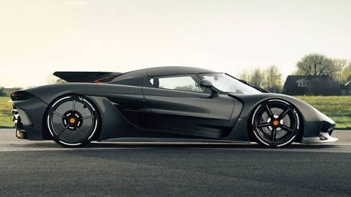

#1 Koenigsegg Jesko Absolut
531km/hProjetado para ser o carro de produção mais rápido da história, o Koenigsegg Jesko Absolut foca em aerodinâmica extrema, alcançando uma velocidade estimada de 531 km/h com seus 1.600 cv de potência.
Ver detalhes